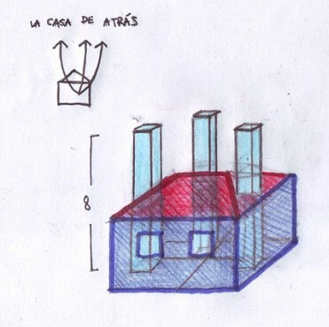
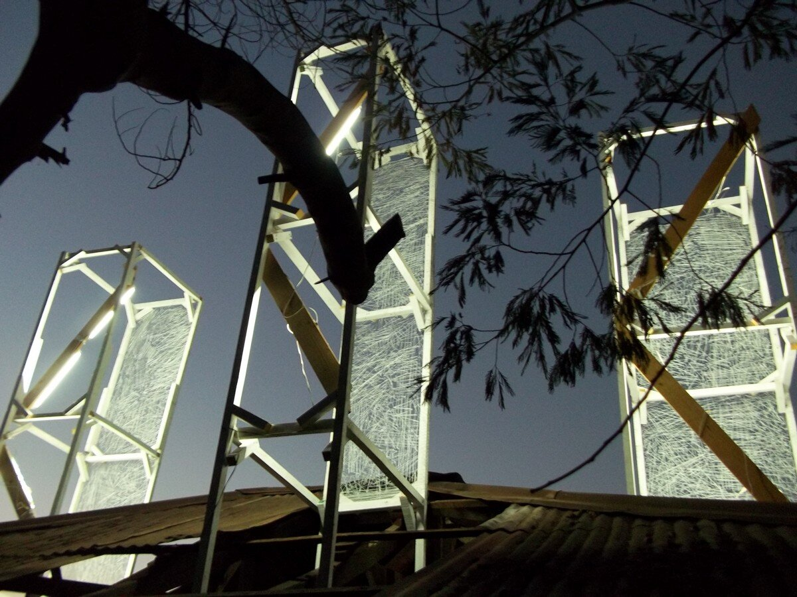
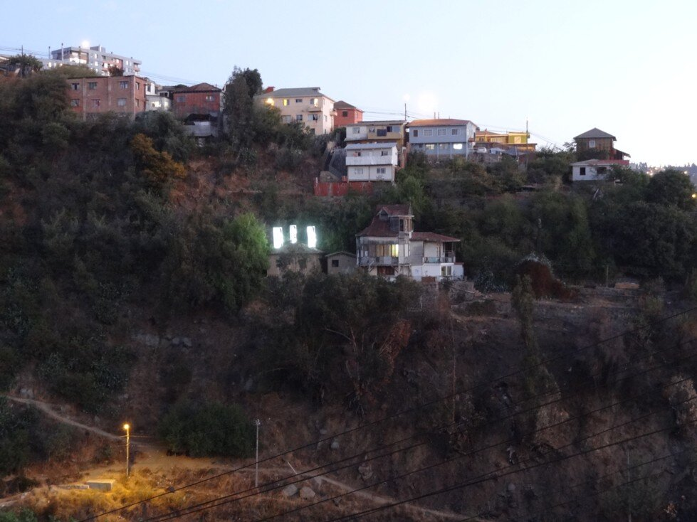
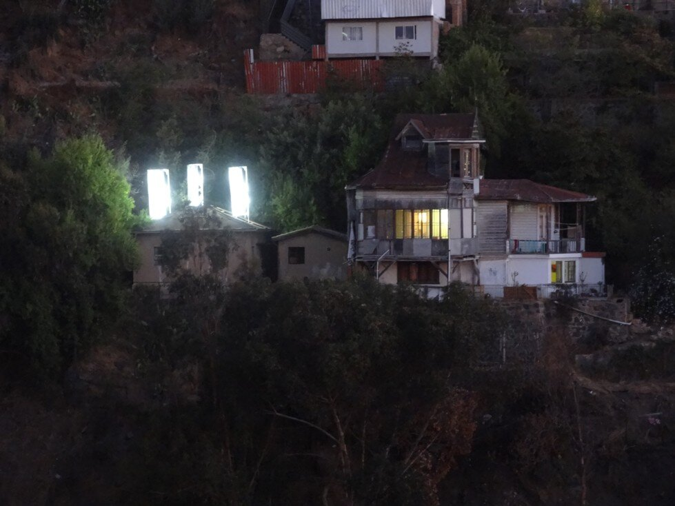
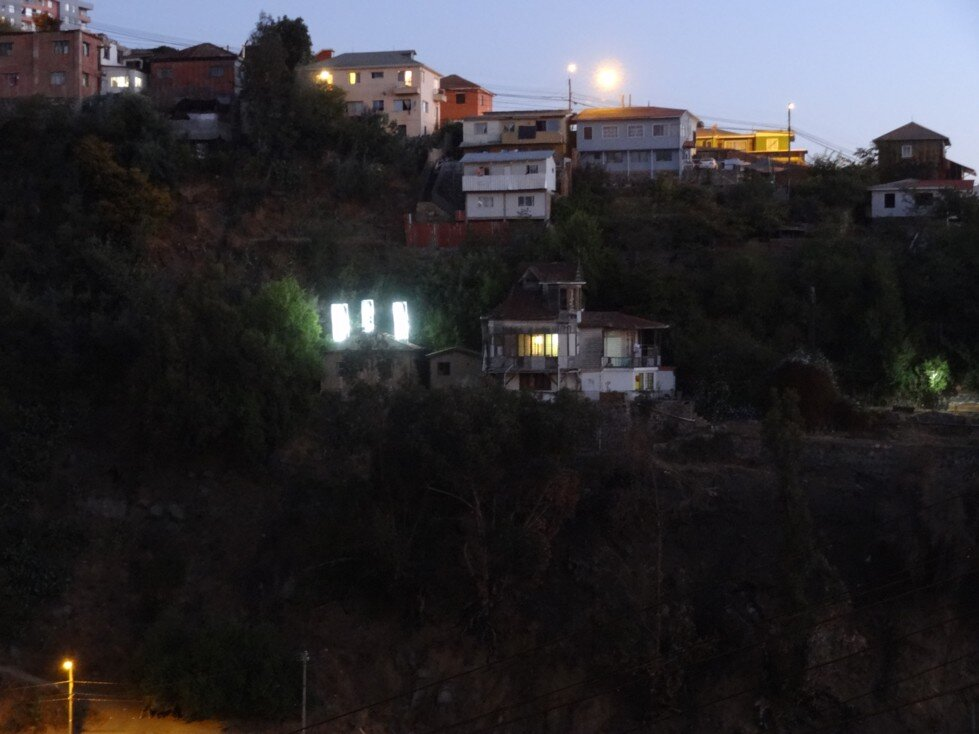
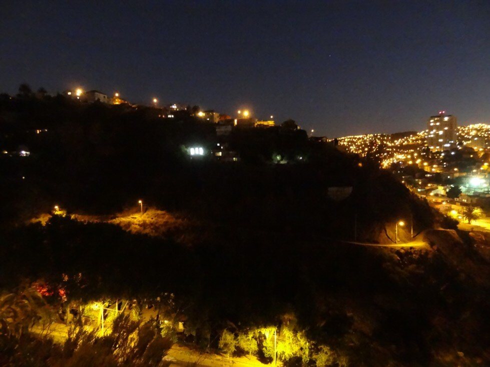

Dossier · La Casa de Atrás
Pieza de Paisaje / La Casa de Atrás
Tres volúmenes de 8 metros de altura que atraviesan la techumbre de un inmueble abandonado desde tres de sus habitaciones.







UbicaciónVALPARAÍSO
33°03′S · 71°37′O